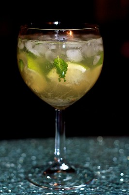
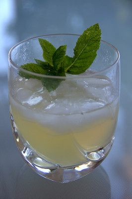
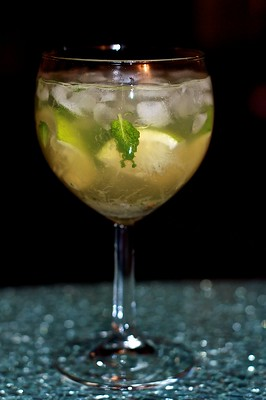
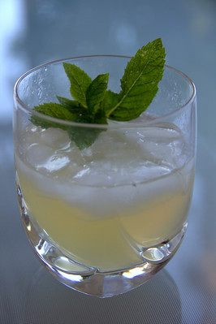

Mojito
Super cocktail
La légende raconte que l'histoire du mojito remonterait au début du xvie siècle (la date de naissance officieuse du prédécesseur du mojito est 1586) lorsque le corsaire explorateur anglais Francis Drake, entre deux pillages de La Havane, appréciait siroter des feuilles de menthe pilées avec du tafia (rhum industriel). Cette tradition explique que des clients actuels demandent dans certains bars « give me a Drake » (« donnez moi un Drake » en anglais)2.
Au xxe siècle, la recette originelle évolue : le tafia est remplacé par du rhum et le citron vert agrémente le mélange. Ainsi est né le mojito connu aujourd’hui, et qui tire son nom du « mojo », une mixture à base de citron initialement destinée à rehausser le goût des aliments.
En 1920, le mojito devint un véritable emblème de la culture cubaine, et est élevé au rang de « cocktail national de Cuba » (le rhum de Cuba est un des principaux produits d'exportation de l'économie de Cuba)
Très apprécié par l’écrivain journaliste américain Ernest Hemingway qui venait régulièrement le déguster lorsqu'il vivait à Cuba entre 1939 et 1960, avec ses célèbres habitudes locales « mon Mojito à La Bodeguita del Medio, mon Daïquiri à la El Floridita » (Ernest Hemingway à Cuba)3. Le cocktail finit par s’exporter d’abord aux États-Unis, puis en Europe, avant d’être préparé dans la plupart des bars du monde entier4.
En France, il a été démocratisé à partir des années 1990 par une importante campagne marketing de la part de la marque de rhum Havana Club.

En savoir plus
 


